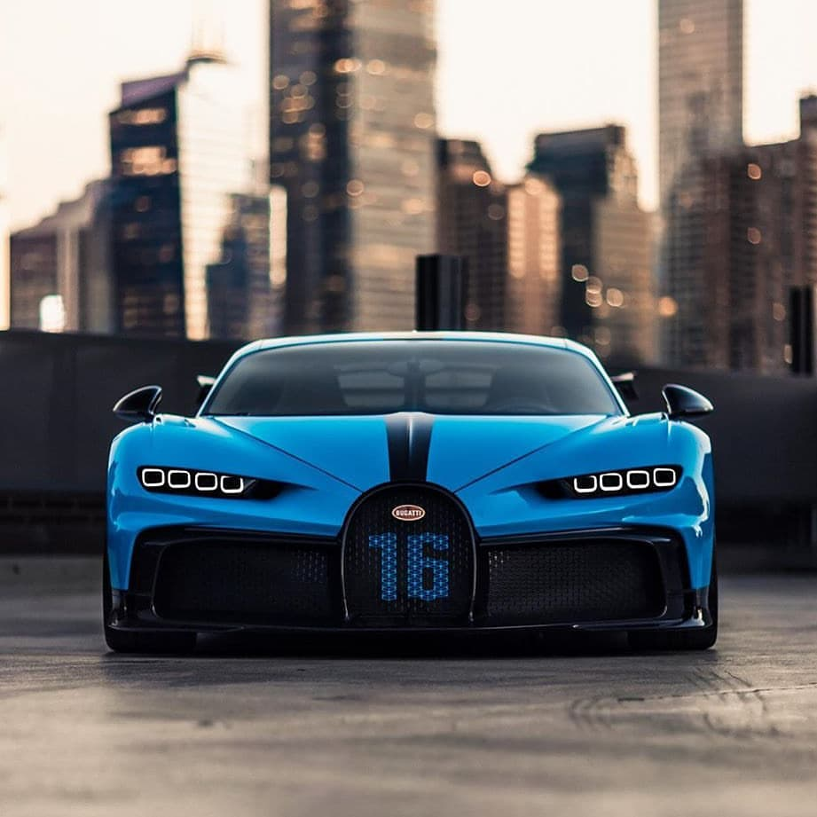
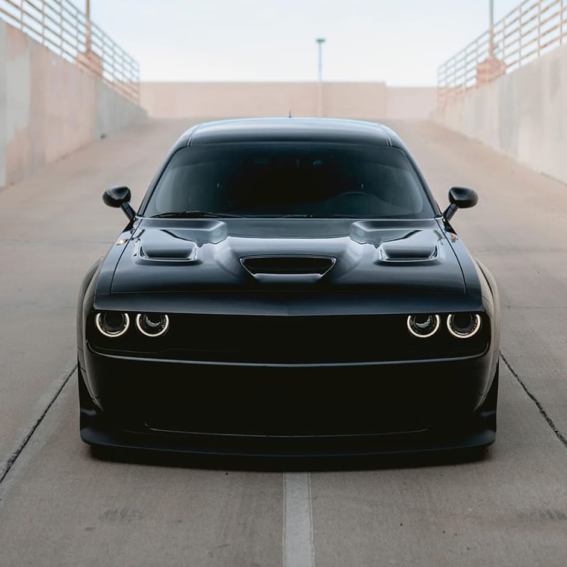

Matt Robinson profile picture
Matt Robinson
a day agoNews
2021 Camaro SS/ZL1 To Be Banned In Two States Because Of Salmon
The SS and ZL1 versions of the Chevrolet Camaro will be removed from sale after 1 January in California and Washington due to the copper content in their brake pads
REMIND ME LATER
2021 Camaro SS/ZL1 To Be Banned In Two States Because Of Salmon - News
After 1 January 2021, it won’t be possible to order a 2021 model year Chevrolet Camaro SS, ZL1 or 1LE in California or Washington State. The reason, perhaps unexpectedly, is fish-related.
All of those Camaro derivatives have one thing in common: the presence of copper in their brake pads. As the pads wear, copper is released into the atmosphere, with some of the particulate matter ending up in waterways. Studies have shown copper to be toxic to salmon and other aquatic species, prompting efforts among legislators and carmakerscarmakers to curb the use of the material in pads. In Washington State from 2021, all new cars must have less than five per cent copper in their pads, dropping to 0.5 per cent in 2025.
Senior General Motors communications manager Kevin M. Kelly confirmed this to be the reason for the discontinuation. “Due to restrictions in California and Washington state related to copper brake pads, customers in those states cannot order a 2021 Camaro SS, ZL1 and 1LE for delivery after January 1, 2021,” he told GM Authority, adding, “Customers can, however, purchase these models from available dealer stock in those states”.

Stephan Winkelmann says a Bugatti Chiron drives an average of 1,000 miles per year and its impact on the environment is rather miniscule.
At a time when electric vehicles are all set to make inroads into the glitzy and fast-paced world of supercars, Lamborghini and Bugatti boss feels that a conventional combustion engine should stay on in such vehicles for as long as is possible because owners don't drive these products as much as the mass-market alternatives.
Speaking to UK's Top Gear, Stephan Winkelmann backed continuing with combustion engines for the forseeable future owing to their, according to him, low impact on the environment. Citing the example of Bugatti Chiron, he explained that the per-year drive distance of high-end vehicles like these is not much for it to have detrimental impact on the planet. "It’s the peak of current automotive technology. It’s possibly the last time a combustion engine like that can be done," he said. "But remember, the average mileage of a Chiron is one thousand miles a year. It’s a low volume car; less than 100 a year. So we are not massively impacting emissions worldwide. So, if it’s possible, we should maintain the combustion engine as long as possible."
Admitting though that the need of the present hour is to adapt, Winkelmann said it remains important to understand customers and what they want, apart from delivering cars like no other. "We have to adapt to what is the challenge of the future and to create an opportunity out of it. We have engineers, a team, and also our customers; they know what is going to come and understand what this is all about," he explained. "And if we match all this, we will have cars which are still exceeding the expectations, will continue to exceed those expectations, and this is what we have to deliver

Dodge offers a wide variety of performance models and powertrains, but we also have the same mindset when it comes to our extensive exterior color options,” said Tim Kuniskis, Global Head of Alfa Romeo and Head of Passenger Cars – Dodge, SRT, Chrysler, and Fiat, FCA – North America.
By bringing back Gold Rush to a few of our 2021 Challenger models, we’re giving our enthusiasts yet another option to make their muscle car even more unique,” added Kuniskis.
The Challenger’s new Gold Rush paint joins other heritage-inspired hues like TorRed, Sinamon Stick, Frostbite, Hellraisin, Go Mango, and F8 Green. Additionally, Dodge is introducing some new options for the 2021 Challenger. The new Challenger R/T Scat Pack Shaker and T/A 392 is now available with the Widebody Package.

Since 2011, the Lamborghini Aventador wears the Big Lambo crown, inherited from the Murcielago and picking up right where it left off. The introduction of the new Aventador also signaled the departure of the Bizzarrini-designed V-12 that powered every V-12 Lambo since Day One back in 1963, with Audi and Lamborghini developing an all-new, 6.5-liter V-12 for the Aventador's launch.
Power from this engine is prodigious. For the regular Aventador LP700-4, that 6.5-liter screams out 690 horsepower and 507 lb-ft of torque to all-four wheels through a single-clutch "ISR" semi-automatic transmission. At the time of the Aventador's development, no nameplate under the Volkswagen Group's purview, save Bugatti, had a dual-clutch stout enough for the Aventador's incredible power, and the Veyron's 'box was likely far too expensive even for Lamborghini, and that explanation assumes it would even work on the Lambo's platform.
The Aventador visually is very much an evolution of the hyper-angular design previewed by the wild Reventon from between 2007-09. Over the course of its eight model years, Lamborghini adorned the Aventador's missile-like profile with all manner of wings, splitters, and diffusers in the name of downforce and performance, but the same fighter-jet aesthetic remains no matter the color, special-edition model, or configuration.
For mor details click here D
<-previous
Next->